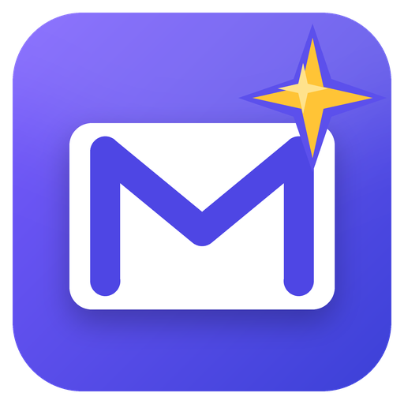

MagMail
A modern, security-focused Gmail client for Windows, with an AI assistant built in to help sort, find, summarize and draft your mail. It runs free and private on your own PC, or on Claude.
Conversations, not lists
Threads read top to bottom with a timeline of who wrote when. Replies open right under the message you're answering.
Labels as folders
Your Gmail labels as a folder tree, with drag-and-drop sorting. Labels can also be mirrored to local folders on your PC.
AI assistant
Find what needs a reply, sort your inbox, summarize threads, draft answers and write reports. It runs on a free local model (Ollama, mail never leaves your PC) or on Claude, always asks before changing anything, and can never send mail.
Private by design
Sign in with Google OAuth, never a password. Tokens and cached mail are encrypted on your PC, and there is no MagMail server.
Download MagMail 1.1.0
For Windows 10 and 11 (64-bit). No installation and no .NET needed: unzip it anywhere and run MagMail.exe.
- First start: MagMail connects to Gmail with your own free Google OAuth client. Follow the setup guide; it takes about 10 minutes, once.
- Windows SmartScreen may warn that the app is from an unknown publisher, because it isn't code-signed. Click More info → Run anyway if the checksum below matches.
- Needs the Microsoft Edge WebView2 Runtime, which is already on Windows 11 and up-to-date Windows 10.